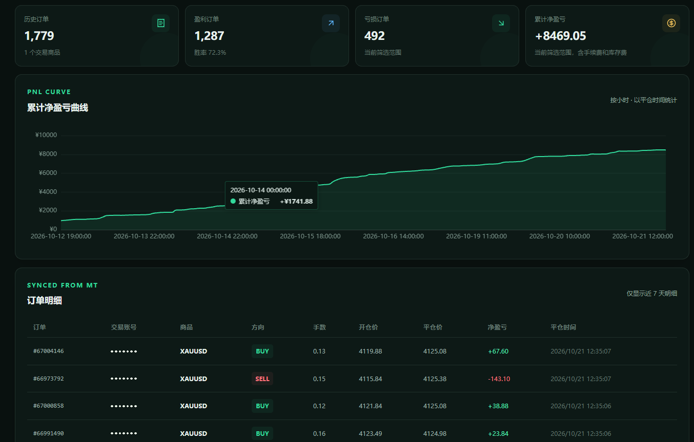

01
7×24 小时运行
EA 挂在 MT4 / MT5 终端上，按设定间隔自动加仓、止盈、移动止损并执行减仓。终端保持在线，规则就一直在跑，不需要人工盯盘。
根据行情趋势开仓，通过趋势方向差异套利离场。
不预测涨跌，而是同时持有多空两条腿：行情往哪边走，都有一条腿在盈利；趋势方向一变，就用盈利腿带走亏损腿。
EA 挂在 MT4 / MT5 终端上，按设定间隔自动加仓、止盈、移动止损并执行减仓。终端保持在线，规则就一直在跑，不需要人工盯盘。
服务端用 AI 分别判断短、中、长三个周期的趋势方向，给 EA 一份「当前是单边还是震荡」的参考，帮你在逆势时收手、在顺势时不早退。
多空两条腿同时在场形成对冲。行情转向时平掉已经获利的腿、保留亏损的腿，用已经落袋的利润带着它等回撤，再按规则逐步减仓离场。
围绕加仓时机、方向控制与极端行情止损逐层设限：什么时候该继续加、什么时候该收手、单边走极端时如何止损，都由规则决定而不是情绪。
下面是我们自己在跑的账户截图：持仓、历史统计和 AI 分析都在 EA 面板上一屏可见。

平台客户端同步你的历史订单，按小时画出累计净盈亏曲线，并把每一笔成交的方向、手数、开平仓价整理成明细。

在平台策略库选择「GL对冲套利策略」，填好首单手数，创建你的策略 Key。
把 EA 装到 MT4 / MT5，填入策略 Key，允许 WebRequest 访问平台接口。
启动时从服务端读取加仓、止盈、减仓等参数，并按周期获取 AI 多周期趋势参考。
开平仓全部在你终端本地完成；成交同步回平台，随时查看曲线与明细。
对冲与加仓会同时放大持仓规模，行情长时间单向运行时浮亏会累积，请务必先用模拟账户或小资金验证， 并设置你能承受的单向止损与最大单数。页面中的截图来自我们自己的运行账户，仅用于说明界面与工作方式， 历史表现不代表未来收益；实际成交与盈亏请以你 MT4 / MT5 账号的交割单为唯一依据。
不能。对冲降低的是「方向判断错」的风险，并不能消除行情单边运行时累积浮亏的风险。请在可承受范围内使用。
EA 运行在 MT4 / MT5 终端上，终端需要保持在线。用 VPS 常驻运行终端是常见做法。
可以。首单手数由你在客户端设置；加仓上限、加仓间隔、止盈与减仓这些参数由平台统一配置，EA 启动时自动读取。
不会。AI 只输出短、中、长三个周期的趋势判断作为参考，不参与下单。开平仓规则完全在 EA 内执行。
平台提供每个策略 Key 的分析次数、订单数、累计盈亏与曲线；更细的每一单成交请查看你的 MT 账号交割单。